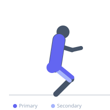
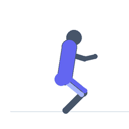

Exercise guide / Power Clean
Power Clean
The power clean is a variation of the Olympic clean in which the bar is received above parallel — in a quarter squat rather than a full front squat — requiring greater bar height and power output from the second pull. It is widely used in sport conditioning programs for developing explosive hip extension power and is more accessible than the full clean due to reduced demands on front rack mobility and squat depth. The power clean is a staple exercise in American football, rugby, and many team sports training programs.
Primary muscles
gluteus maximus
vastus lateralis
trapezius upper
erector spinae
Secondary muscles
biceps femoris long head
latissimus dorsi
rectus femoris
Stabilizers
transverse abdominis
flexor carpi radialis
Equipment
Standard Barbell
Weight Plates


Starting position
- Bar over mid-foot, shoulder-width grip, flat back, hips slightly above knees, shoulders over or slightly in front of the bar.
Setup
- Use bumper plates. Set the bar on the floor. Establish a neutral spine and proper hip hinge position before each rep.
Steps
- Step 1: First pull — press the floor away, keeping the back angle constant and bar close to the body.
- Step 2: Second pull — explosively extend the hips as the bar passes the knees and hip crease.
- Step 3: At full triple extension (ankle, knee, hip), shrug the traps and pull the elbows high and outside.
- Step 4: Rotate the elbows under the bar and receive it in the front rack on the shoulders in a quarter squat (above parallel).
- Step 5: Stand to full extension, return the bar to the floor with control.
Coaching cues
- Hips through — extend completely before pulling
- High elbows — the bar should land on the shoulders, not the hands
- Catch above parallel
Breathing
- Brace before the pull. Hold through the second pull. Exhale after standing from the catch.
Range of motion
- Full hip extension before the third pull. Catch above parallel in a stable front rack position.
Tempo
- Explosive pull. Brief pause in front rack. Controlled lower.
Common mistakes
- Catching below parallel (this is a full clean — the power clean catch must be above parallel)
- Pulling with the arms before hip extension
- Letting the bar drift away from the body
Safety
- Use bumper plates. Practice the hip drive and high pull before combining into a full power clean.
- Wrist pain can occur in the front rack — develop wrist flexibility progressively.
Training
- power: 1–5 reps
- strength: 1–5 reps
- power: 4–8 sets
- strength: 3–6 sets
- Rest: {'power': 180, 'strength': 180}